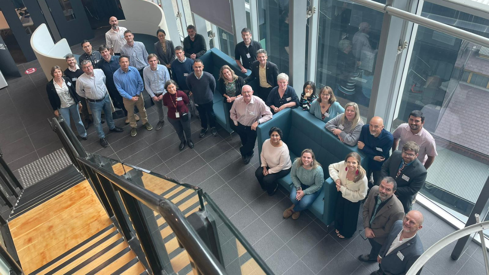

SOT sessions
The Ship Observations Team convenes every two years in plenary session, bringing together member-country representatives, programme managers, task team chairs, and secretariat staff from WMO and IOC-UNESCO. Each session reviews the status of VOS, ASAP, and SOOP; evaluates data quality and network performance; adopts recommendations for the intersessional period; and sets strategic priorities. Session reports are the authoritative record of SOT decisions and recommendations.
